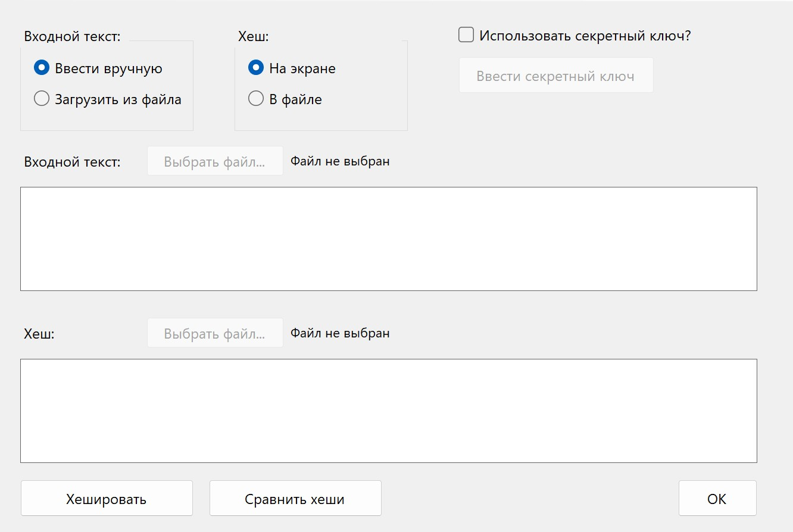

Лабораторная работа №13.2
Дисциплина: «Компьютерные сети»
Список работ
ЛР №7
ЛР №8
ЛР №9
ЛР №10.1
ЛР №13.1
ЛР №13.2
Лабораторное задание
Реализовать на web-странице меню, выглядящее, как меню в Windows-приложениях, и содержащее не менее двух уровней вложенности.
File
New
Open
Save
Save As
Print
Page Setup
Recent Files
>
file1.txt
file2.doc
file3.pdf
Exit
Edit
Cut
Copy
Paste
Delete
Select All
Find and Replace
>
Find
Replace
Find Next
Find Previous
View
Zoom In
Zoom Out
Full Screen
Show Toolbar
Show Status Bar
Layout
>
Standard
Wide
Narrow
Help
Contents
About
